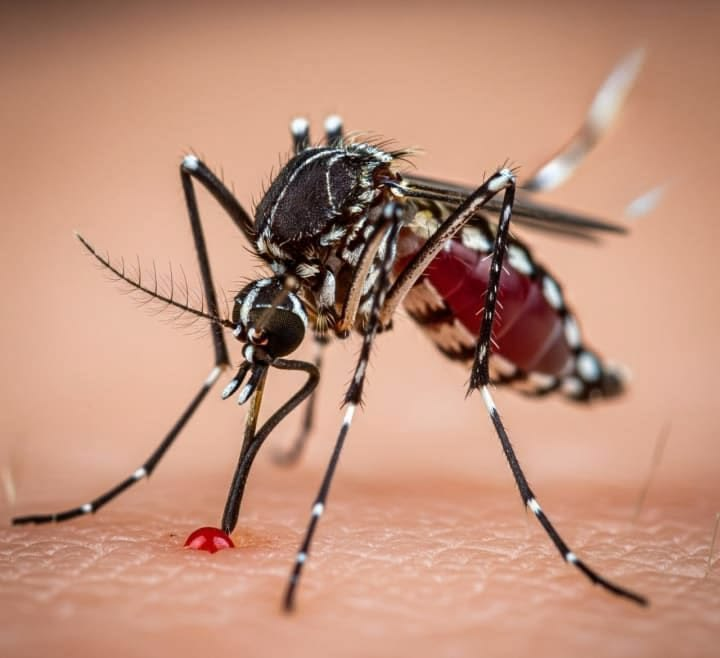
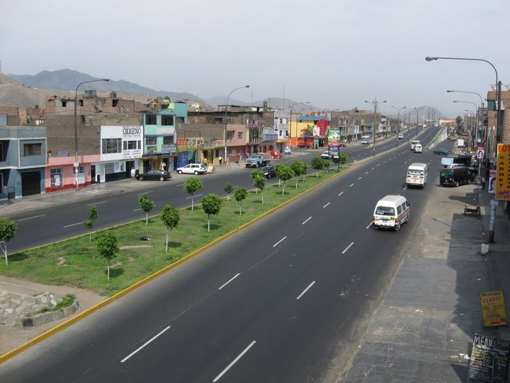

El agua que queda en tu patio puede criar dengue.
Larvex es una plataforma gratuita para prevenir el dengue cuando llegan las lluvias del Fenómeno El Niño.
El problema
El Fenómeno El Niño es un evento climático que altera las lluvias en la costa peruana. Cuando llega a Trujillo, las precipitaciones intensas y prolongadas dejan agua estancada en calles, patios, llantas viejas, baldes, canaletas y floreros. Esa agua limpia y quieta es el lugar perfecto para que el zancudo Aedes aegypti, transmisor del dengue, ponga sus huevos.
La hembra del zancudo deposita sus huevos en las paredes de los recipientes, justo por encima del nivel del agua. Cuando llueve o el recipiente se llena, los huevos eclosionan y las larvas se desarrollan en el agua. En condiciones favorables, una larva puede convertirse en zancudo adulto en unos 7 a 10 días.
Por eso, revisar y eliminar el agua acumulada cada semana es la medida más eficaz para cortar el ciclo de reproducción del zancudo. No se necesita una gran inundación: un pequeño recipiente con agua puede ser suficiente para criar cientos de zancudos.
El dengue
El dengue se transmite por la picadura de la hembra infectada del zancudo Aedes aegypti. No se transmite de persona a persona. Los síntomas más frecuentes son fiebre alta de inicio repentino, dolor de cabeza intenso, dolor detrás de los ojos, dolor muscular y articular, sarpullido, náuseas o vómitos[reference:0].
Signos de alarma que exigen atención médica inmediata: dolor abdominal intenso y continuo, vómitos persistentes, sangrado de nariz o encías, y somnolencia o irritabilidad[reference:1]. Ante fiebre alta, acude al centro de salud más cercano y no te automediques con aspirina ni ibuprofeno.

Prevención en casa
La descacharrización consiste en eliminar o voltear todos los recipientes que puedan acumular agua. Revisa tu patio, techo y jardín: baldes, llantas, botellas, latas, macetas y floreros deben vaciarse o guardarse bajo techo. Los depósitos de agua deben estar bien tapados.
Lava con escobilla los bordes de baldes y tanques, ya que los huevos del zancudo quedan adheridos a las paredes. Limpia canaletas y desagües para que el agua no se empoce. Usa repelente y ropa de manga larga, especialmente al amanecer y al atardecer, y coloca mallas en ventanas y puertas[reference:2].

Reporta una zona
Ayuda a identificar focos de agua estancada en Trujillo. Toca el mapa para marcar la ubicación o usa tu ubicación actual.
Este es un prototipo escolar. Los reportes se guardan en tu navegador y todavía no se envían a una base de datos.
Cazador de Criaderos
Demuestra cuánto sabes sobre la prevención del dengue. Responde 8 preguntas y compite en el ranking.
Antes de empezar
Resultado final
Equipo G.E.N
- Jhon Marcelo Reyes Obando
- Iker Jaden Torres Terrones
- Andrea Ivana Monzon Rodriguez
- Jazmin Tufinio [segundo apellido]
- Yamil Aaron Sanchez Bobadilla